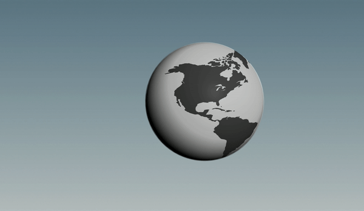
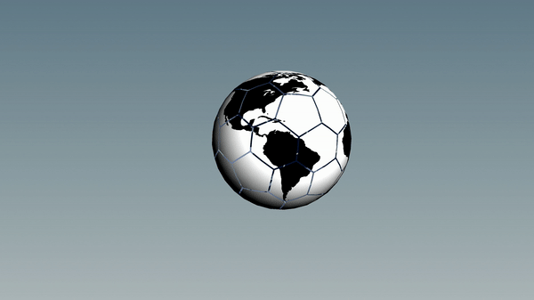

notes: talk about updates here! so far feed back is:
notes: last week we messed around a bit with mappable data and made some interactive dashboards

notes: this week we’ll talk a bit about map projections and a few specific engines
fyi – we might not get to much of ipyleaflet and cartopy, but there are some extra notebooks from other years with more examples
notes: in more detail: last week we started with maps and how we can use bqplot to do a lot of mapping type stuff
This week we will play with a few different mapping and viz engines and deal with the JSON and geo-json format for storing data
again, might not get to as much with cartopy/ipyleaflet
Thinking about map projections is important for GIS data, and generic global info viz.
Let’s start by thinking about the fact that…
Thinking about map projections is important for GIS data, and generic global info viz.
Let’s start by thinking about the fact that…
The Earth is a sphere.
(Fun question: to what degree is it a sphere?)
Have you ever wrapped a piece of paper around a ball?
To map from one system to another, we must “project” from the original sphere to the flat object we are observing.
What are some things we could preserve during such a projection?

notes: One common conversion from sphere to plane is the squashed cylinder approach
This can be used to conserve straight lines (distances)

notes: There’s always a weird way to do it too. Here we’re exploding the sphere into lots of mostly planar pieces that we can just lie out side-by-side.
This may preserve shape well, but it will be hard to use to navigate!
Typically, one or more of these will be preserved, or at least, the distortion will be minimized:
Typically, one or more of these will be preserved, or at least, the distortion will be minimized:
There are other properties that can be preserved, as well. Typically, maps will be a “compromise” between preserving different properties.
What happens when we preserve one property over another?
Mercator is a “conformal” projection. What is wrong with this?
notes: conformal = shape preserving (at the expense of accurate size)
We can characterize distortions in a projection by examining how a known shape appears on them. The Tissot Ellipse of Distortion is a method of showing this by drawing circles of a fixed radius and examining their elliptical distortion.

notes: so here for example, we see that the mercator projection has circles that stay circles, though they change in relative size depending on where they are on the map
What do you notice?
notes: Greenland and Antarctica are HUGE
notes: this projection is most accurate near the vertical center line
notes: Also known as “equirectangular”, this is the favorite format of NASA because it’s mathematically straightforward.
Note that the very top line of the image represents a single point on the globe.
notes: this is considered a good compromise between shape-preserving and angle preserving - but it’s not perfect at either.
notes: this has even less distortion than mollweide, but the pointy ends don’t feel very elegant and planet-like
notes: this is another nightmare scenario like Mercator that was initially created for navigation. Straight lines on this map are the shortest route, but area, shape, and size are distorted.
What happens when we make a map that minimizes one region and maximizes another?
notes: after watching this, it’s useful to know that the Peters projection is actually flawed as a teaching tool because of how much it distorts the shapes of countries near the poles.
pause recording!
notes: Let’s go see what Greenland actually looks like …
did you remember to turn back on the recording??
Why is Europe at the center of all the maps we’ve looked at?

notes: there is nothing specifically wrong with putting a pole at the center of the map

notes: also see here that now the equator is very distorted, and the south pole even more so!

notes: or why bother having a spherical or rectangular shape at all?

notes: look how here there is very little distortion of size or shape
Once we have our system of transformation, we need to have a method of representing positions.
Three common baseline methods:
Take care with:

notes: json is meant to be a way to store data that is “query” based - i.e. it lends itself to searches well
for this reason, it shows up in web development a lot

notes: geojson is just a special json formatting for geographical data
it will specify the “shape” of the data file but also things like its default coordinate reference system which tells you something about the “center” and “stretch” of whatever it lists in its coordinates
notes: cite: https://image.slidesharecdn.com/geojson-170417122110/95/geojson-1-638.jpg?cb=1492431924
We will see a lot of Polygons & MultiPolygons.
Tips for dealing with GeoJSON:
.keys() and progressively drill down to data of interestproperties and featuresWe will get practice at this during programming (and in extra notebook examples).
notes: often our issue will be linking the information stored in JSON file formats with that of whatever plotting routine we are using
we’ll get some practice with this in the coding portion of class
notes: so, we’ll mostly be using geopandas for this lecture, but there are other tools available like cartopy and ipyleaflet
If we have time, we’ll go into those, but if not, they are in the extra prep notebook for today if you want to look on your own

notes: the calls for geopandas is going to look very similar to pandas calls!
gdf = geopandas.read_file('mapfile.geojson')
gdf.head()
gdf.plot()
notes: very pandas-like calls we can use
gdf = geopandas.read_file('mapfile.geojson')
gdf.head()
gdf.plot()
Map information sources:
notes: we’ll just touch on a few data sources, and you’ll have the opportunity to explore a few more in the HW, specifically HW#8

notes: we’ll also play around with using contextily to add backgrounds to maps
notes: I’ve added a few extra slides at the end of this slide deck about cartopy and ipyleaflet that we can look over if we get to those topics
otherwise they are left for your reference
CartoPy is a toolkit that builds on matplotlib to create fast, easy map representations.
We will be relying on three key concepts:
Using these, we will be able to build out many visualizations.
We start out by constructing an axes in CartoPy that uses a given projection:
import cartopy
import matplotlib.pyplot as plt
fig = plt.figure()
ax = fig.add_subplot(111, projection=cartopy.crs.Mollweide())
ax.coastlines()
Transforming from a spherical reference system to a flat reference system is the job of the projection; transforming from one discretization of a sphere to another is the job of the coordinate system.
We can utilize Coordinate Reference Systems to describe the input coordinate system and the rasterization system are described.
For example, there are several different ways to draw “straight” lines. We can
do both PlateCarree and Geodetic.
c_lat, c_lon = 40.1164, -88.2434
a_lat, a_lon = -18.8792, 47.5079
fig = plt.figure()
ax = fig.add_subplot(111, projection = cartopy.crs.PlateCarree())
ax.gridlines()
ax.coastlines()
ax.set_global()
ax.plot([c_lon, a_lon], [c_lat, a_lat], transform = cartopy.crs.PlateCarree())
ax.plot([c_lon, a_lon], [c_lat, a_lat], transform = cartopy.crs.Geodetic())
notes: the blue line is Plate Carree, which maintains a straight line on the lat-lon grid
the orange line is Geodetic, which maintains a straight line around the curvature of the Earth
notes: now even the blue line has some curvature because we are picking a best-of-both-worlds Mollweide projection that doesn’t perfectly preserve angle or area.
Leaflet is another mechanism of plotting, displaying and interacting with maps.
We will very briefly play with this in Python - could be of use for those that were having issues with cartopy.